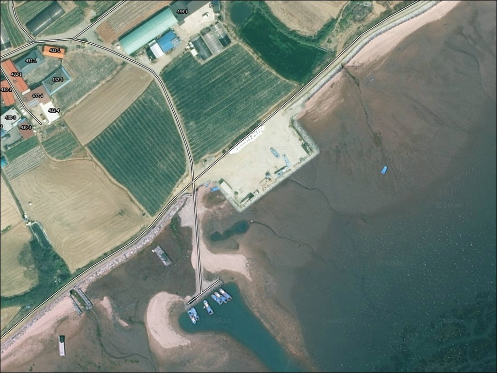
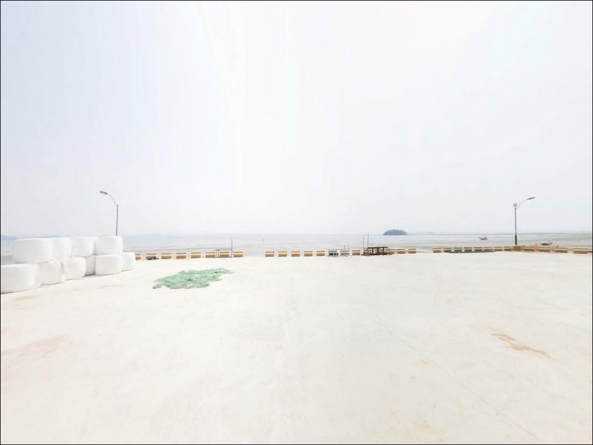
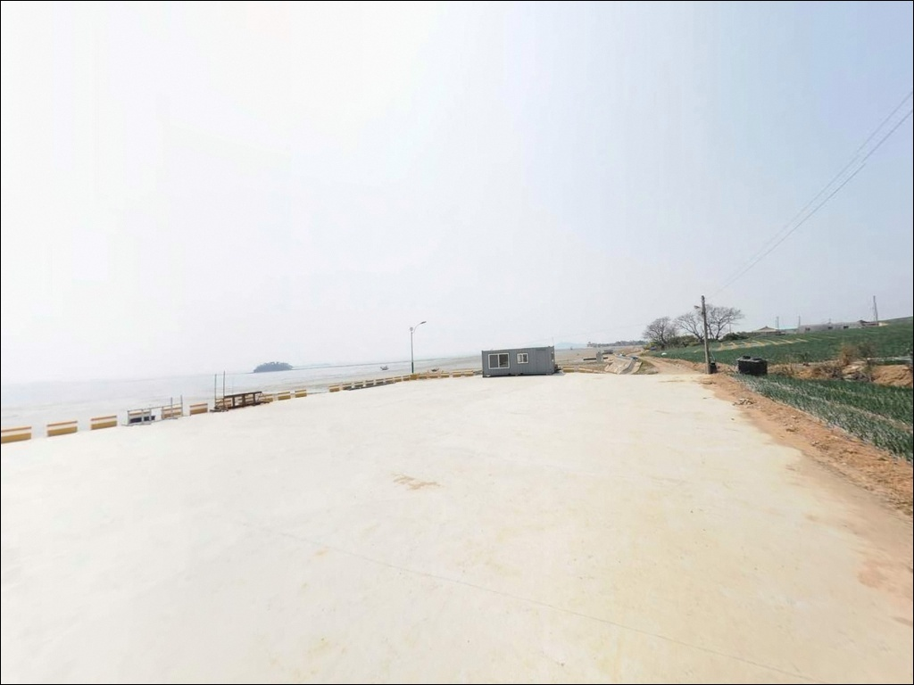
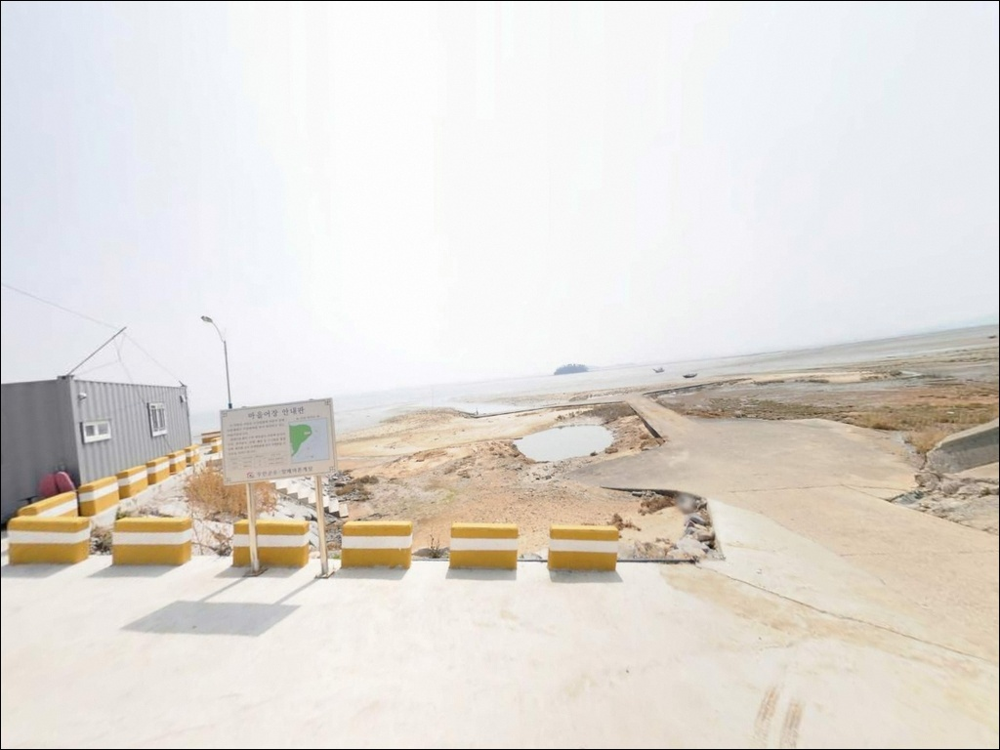
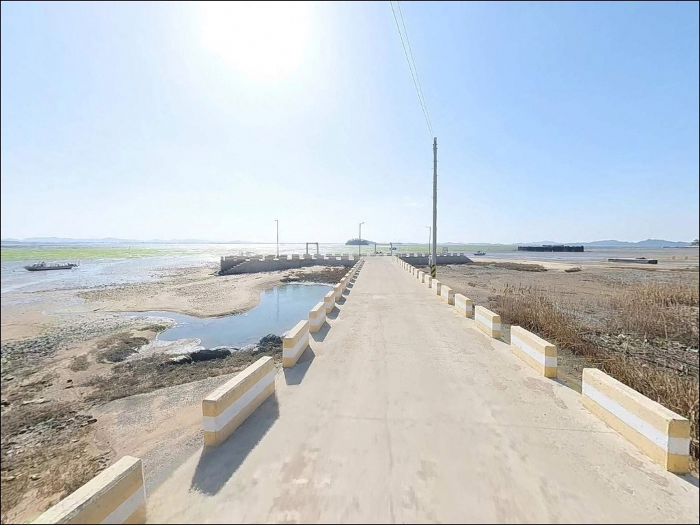
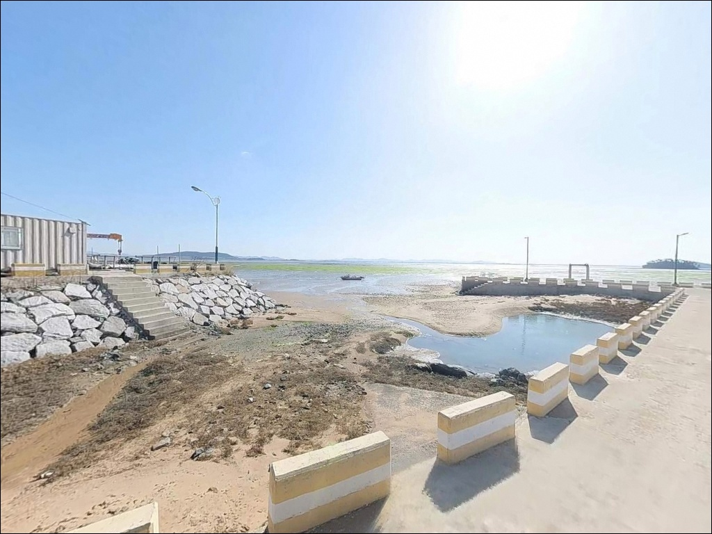
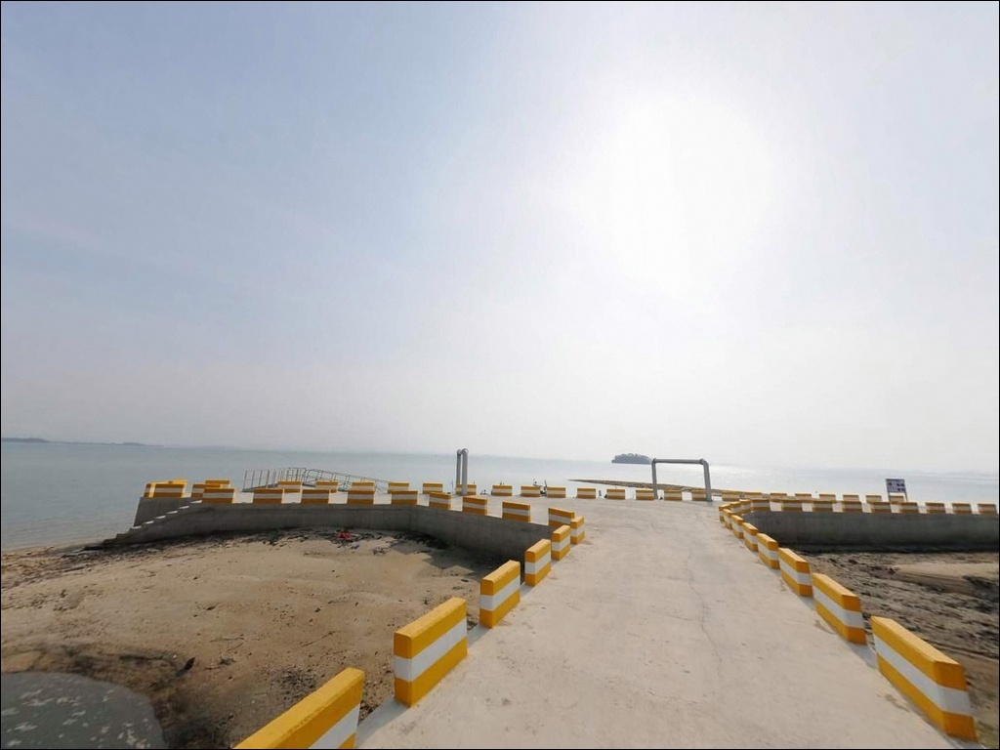
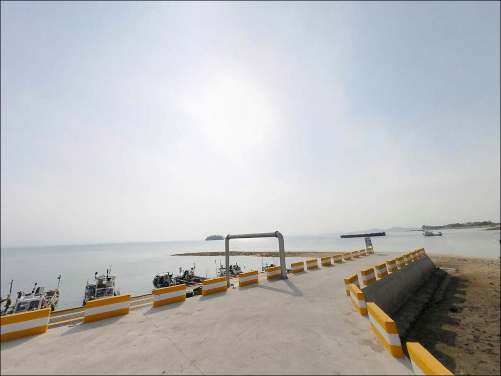
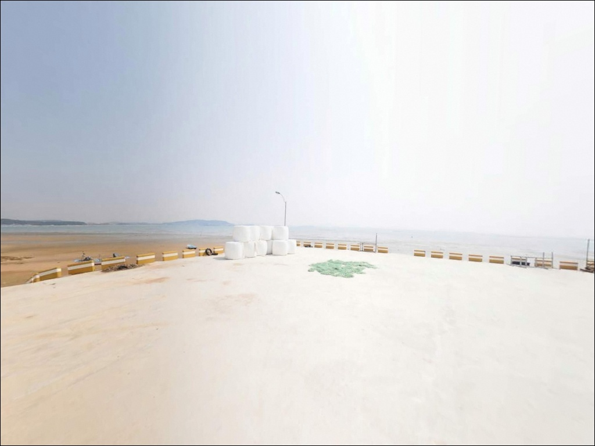

창매리 선착장, 전남 무안군 바다와 가장 가까이 머무는 차박, 낚시 해안 명소
이 페이지에는 광고(제휴 링크 포함)가 있으며, 광고 링크를 통해 구매하면 운영자가 판매 수익 또는 수수료를 받을 수 있습니다. 포인트 사진: 카카오맵 스카이뷰·로드뷰. 이 페이지의 지도·사진 이미지는 카카오맵의 실제 서비스 이미지와 다를 수 있습니다.


포인트 안내
창매리 선착장
전남 무안군 해제면 창매리 23
서해 남부권에서 조수간만의 차를 계산하지 않고
선착장에 내려서면
넓게 드러난 갯벌 앞에서
낚싯대를 꺼낼 자리조차 만들기 어려운 상황이 생깁니다.
창매리 선착장은 만조 전후 2~3시간이
낚시 여건이 살아있는 실질적인 공략 시간대이며,
그 외 시간은 접근 방식 자체를 달리해야 합니다.
이 글은 창매리 선착장의
진입 동선, 차박 체류 여건, 물때 기반 낚시 접근법,
대안 포인트 동선에 집중합니다.
조황 단정이나 특정 어종 보장은
이 글의 범위에 포함되지 않습니다.

1. 진입 동선과 포인트 접근성
창매리는 무안 해제반도 서쪽 해안선을 따라
자리한 소규모 어촌 마을입니다.
주진입로는 해제면 소재지 방향에서
마을 도로를 타고 들어가는 구조로,
2차선 포장도로가 마을 중심부까지 연결되어 있어
승용·SUV 차량의 기본 진입은 어렵지 않습니다.
마을 내부 구간은 폭이 좁아지는 농어촌 도로 수준입니다.
대형 SUV나 캠핑카로 선착장 끝까지 진입하려면
회차 공간이 넉넉하지 않으므로
출발 전 위성지도로 선착장 진입로를 미리 확인하는 것이
기본 준비입니다.
마을 도로변이나 선착장 인근 공터를
주차 후보지로 먼저 살피되,
허용 여부는 현장 표지판 기준으로 판단합니다.
낚시어선이 이용하는 연안 선착장이므로
어선 계류 공간과 동선은 반드시 피해야 합니다.
도착 후 자리를 잡기 전에
어선 출입 상황을 먼저 살피는 것이
이 포인트에서 지켜야 할
기본 매너이자 안전 조건입니다.

2. 차박 환경과 야간 체류 여건
창매리 일대는 논과 들 사이에 민가가 드문드문 있는
조용한 어촌 마을 분위기입니다.
야간 통행이 많지 않아 소음 측면에서는
차박 체류에 크게 불리하지 않은 편이지만,
민가와 가까운 구간에서는
엔진 공회전과 음악 재생을 자제하는 것이
기본 매너입니다.
야간 조명은 마을 가로등 수준으로 제한적입니다.
선착장 끝쪽은 가로등이 없는 구간이 많아
개인 조명 장비를 반드시 챙겨야 합니다.
서해 내만 구조라 파도 영향은 비교적 약한 편이지만,
안개·해무가 잦은 시기에는 운전과 이동에 별도 주의가
필요합니다.
선착장 주변 공터의 차박 공간 여부는
현장에서 직접 확인해야 합니다.
주차 면적이 제한적이므로
차박을 메인 목적으로 삼기보다는
낚시 후 조용히 하룻밤 머무는
겸용 방식이 이 포인트 성격에 맞는 체류 형태입니다.


3. 주변 편의시설 및 인프라 현황
창매리 선착장 반경 3km 이내에서
확인된 편의점·마트·식당 정보는 없습니다.
소규모 어촌 마을 특성상
식수, 얼음, 낚시 소품, 비상 약품 모두
출발 전 완비하고 가는 것이 현실적인 준비 방식입니다.
해제면 소재지 방향으로 차량으로
10분 내외 이동하면 면사무소 인근 상가를 이용할 수 있습니다.
부족한 소품이 있다면
이 동선을 출발 전에 활용하는 편이 효율적입니다.
응급 상황에 대비한 연료 여유분과 비상 약품도
무안읍까지의 거리를 감안해 사전에 준비하는 것이 기본입니다.

4. 물때 모르면 이 선착장에서 낚시 못 합니다
창매리 선착장 방문 전
가장 먼저 확인할 것은 물때입니다.
서해 남부권은 조수간만의 차가 매우 큰 지역으로,
간조 시에는 선착장 전면까지 갯벌이 드러나
낚시 여건 자체가 만들어지지 않습니다.
중들물 이후 만조 전후 2~3시간을
공략 시간대로 계산하고 출발 시각을 맞추는 것이
이 포인트의 기본 전략입니다.
바다타임에서 해제면 기준 물때를 확인하면
당일 만조 시각과 조류 흐름을 파악할 수 있습니다.
사리 전후에는 조류가 빠르게 흘러
채비 컨트롤이 어려워지는 구간이 생기므로,
조금 전후 또는 물돌이 타이밍이
채비 손실을 줄이면서 공략하기 좋은 조건입니다.
기상 변화에도 주의가 필요합니다.
서해 해안선 특성상 안개와 해무가 잦은 편이며,
당일 아침 기상청 해상예보를 다시 한번 확인하는 것이
포인트 낭비를 막는 조건입니다.
갯벌 지형 위에서의 이동은 발 빠짐 위험이 있으므로
물 빠짐 속도를 항상 확인하며 움직여야 합니다.

5. 지형 기반 낚시 여건 분석
창매리 선착장은 해제반도 서쪽 해안선에서
내만 방향으로 자리한 갯벌형 소규모 선착장입니다.
외해에 직접 노출된 구조가 아니라
만 안쪽 완만한 수심이 이어지는 형태이며,
선착장 끝단과 수로 방향이
상대적으로 수심이 확보되는 구간입니다.
이 구간이 낚시 자리로 가장 먼저 살펴볼 지점입니다.
서해 갯벌형 소규모 선착장 일반 패턴 기준으로
만조 시 선착장 전면에서 2~4m 내외의 수심이 형성됩니다.
방파제 구조물이 아닌 선착장 접안면 중심 포인트이므로
물때 타이밍에 따른 낚시 가능 여부 편차가 큰 포인트입니다.
출조 전에 창매리 낚시 조황을
먼저 검색해 보시는 편이 좋습니다.
연안정비 구간으로 관리되는
직선형 제방이 선착장과 이어지는 구조이며,
제방 굽어지는 구간이나 끝지점은
상대적으로 수심이 깊어지는 여건이 생기는 편입니다.
조류 영향은 만 구조와 갯벌 지형으로 인해
비교적 완만하게 흐르는 패턴입니다.


6. 포인트 지형에 맞는 낚시 스타일
이 포인트에서 가장 기본이 되는 방식은
원투낚시입니다.
갯벌형 선착장 구조에서
선착장 접안면 끝에서 멀리 던져
바닥층을 탐색하는 방식이 지형과 잘 맞습니다.
만조 직전 물이 충분히 들어오는 타이밍에
집중 공략하는 것이 이 포인트의 기본 운용 기준입니다.
찌낚시도 선착장 전면 수심 확보 구간에서
기대해볼 수 있습니다.
봄철에는 해제면 일대 해안선에서
감성돔 새끼(삐드락)가 움직이는 시즌이며,
선착장 전면을 흘리는 찌낚시 방식이
이 시기 접근 방식으로 어울립니다.
가을철에는 무안 해제반도 일대 해안선에서
갑오징어와 주꾸미가 움직이는 시즌입니다.
선착장 끝단이나 수로 방향에서
에깅 채비로 가볍게 탐색해볼 수 있으며,
만조 타이밍에 수심이 충분히 확보되는 것이
에깅 시도의 기본 전제 조건입니다.

7. 대안 포인트와 플랜 B 동선
창매리 선착장의 조건이 여의치 않을 때
첫 번째 대안은 도리포항입니다.
해제면 해안선을 따라 위치한 어항으로
창매리보다 규모가 크고
낚시 정보도 비교적 접하기 쉬운 포인트입니다.
낙지등대와 해제면 해안 드라이브 코스와 연결되어
이동 동선으로 자연스럽게 묶을 수 있습니다.
물때나 바람 방향이 맞지 않을 때는
금산방조제 구간도 탐색 후보입니다.
제방 길이가 어느 정도 확보된 구조로,
차량 접근 후 구간을 따라 이동하며
포인트를 찾는 방식으로 활용할 수 있습니다.
홀통해변 인근도 서해랑길 24코스 구간과 연결되어
다양한 연안 포인트를 탐색하기 좋은 해안선입니다.
조황이 기대에 크게 못 미칠 경우에는
무안 망운면의 톱머리방파제를 고려해볼 수 있습니다.
봄철 감성돔 낚시로 알려진 포인트이며,
창매리에서 차량으로 30분 내외 거리에 위치합니다.

물때 맞추면 조용한 서해 갯벌낚시가
기다리는 선착장입니다
창매리 선착장은 규모가 크지 않고
알려진 포인트도 아닙니다.
사람이 많지 않은 한적한 분위기에서
원투낚시나 찌낚시를 즐기고 싶은 낚시인에게
지형 조건이 어울리는 편이며,
무명 포인트를 먼저 탐색해두고 싶은
탐험형 낚시인에게도 맞는 곳입니다.
반면 물때 계산 없이 방문하거나
현장에서 즉석으로 소품을 구하려는 계획은
이 포인트와 맞지 않습니다.
물때 확인, 완전 자급 준비, 진입로 사전 파악,
이 세 가지를 갖추고 간다면
조용한 서해 갯벌낚시를 온전히 즐길 수 있는 포인트입니다.
낚시를 마치고 갯벌 위로 지는 서해 노을 옆에서
차 안에 조용히 머무는 차박 여행자라면,
공간 여건을 낮에 미리 확인해두면
낚시와 차박을 함께 즐기기 좋은
출조가 될 수 있는 곳입니다.